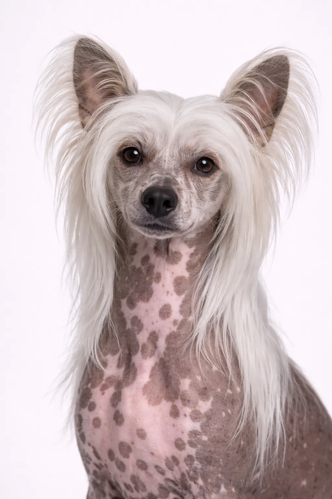

玩具犬组
超小型
中国冠毛犬
最易训练的犬种之一——深情、爱玩，学习迅速。
起源
中国/非洲
寿命
13-18 年
身高
28-33 cm
11-13 in
11-13 in
体重
2-5 kg
4-11 lbs
4-11 lbs
品种评分
活力水平2/5
美容需求3/5
可训练性4/5
适合儿童3/5
适合公寓5/5
吠叫程度2/5
性格
深情爱玩警觉活泼忠心
概述
中国冠毛犬有两种类型：无毛型（头部、脚部和尾部有毛）和粉扑型（全身被毛）。
性格
中国冠毛犬以深情、爱玩、警觉著称。聪明且渴望取悦主人，使训练变得愉快。早期社会化有助于它们成长为全面发展的伴侣。
健康
总体健康，寿命13-18年。常见问题包括髌骨脱位和牙齿问题。定期兽医检查和预防性护理非常重要。保持健康体重有助于预防多种健康问题。
运动
每日短暂散步和室内玩耍即可满足低至中等运动需求。满足基本需求后，能很好地适应公寓生活。互动玩具能保持它们的精神活跃。温和的活动最适合这一品种平静的性格。
⦿ 这个品种适合您吗？
✓ 最适合
- 公寓居民
- 过敏者（无毛型）
- 想要忠诚膝上犬的人
- 喜欢梳理护理的主人
✗ 不太适合
- 以户外活动为主的主人
- 极寒气候（需要保暖措施）
- 环境粗糙的家庭
- 想要强壮犬的人
我们的评价: 无毛或蓬松型的独特忠诚伴侣。中国冠毛犬深情且适合公寓居住，但需要皮肤和牙齿护理。